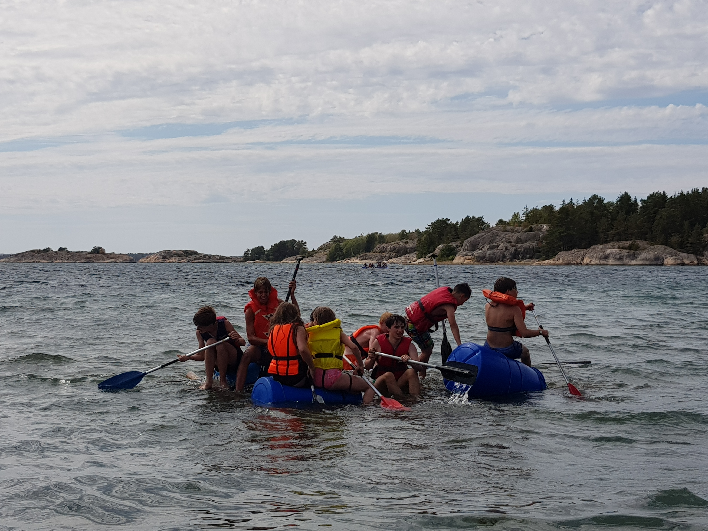

Slik startet Henrik Kristoffersen sin partsforklaring på rettssakens andre dag. Kristoffersen har saksøkt Norges Skiforbund for retten til å bruke sin private sponsor, Red Bull, på hjelmen under konkurranse. Denne plassen har på sin side skiforbundet solgt til Telenor.
Slik startet Henrik Kristoffersen sin partsforklaring på rettssakens andre dag. Kristoffersen har saksøkt Norges Skiforbund for retten til å bruke sin

Slik startet Henrik Kristoffersen sin partsforklaring på rettssakens andre dag. Kristoffersen har saksøkt Norges Skiforbund for retten til å bruke sin private sponsor, Red Bull, på hjelmen under konkurranse. Denne plassen har på sin side skiforbundet solgt til Telenor.
Slik startet Henrik Kristoffersen sin partsforklaring på rettssakens andre dag. Kristoffersen har saksøkt Norges Skiforbund for retten til å bruke sin private sponsor, Red Bull, på hjelmen under konkurranse. Denne plassen har på sin side skiforbundet solgt til Telenor.Slik startet Henrik Kristoffersen sin partsforklaring på rettssakens andre dag. Kristoffersen har saksøkt Norges Skiforbund for retten til å bruke sin private sponsor, Red Bull, på hjelmen under konkurranse. Denne plassen har på sin side skiforbundet solgt til Telenor.
Slik startet Henrik Kristoffersen sin partsforklaring på rettssakens andre dag. Kristoffersen har saksøkt Norges Skiforbund for retten til å bruke sin

Slik startet Henrik Kristoffersen sin partsforklaring på rettssakens andre dag. Kristoffersen har saksøkt Norges Skiforbund for retten til å bruke sin private sponsor, Red Bull, på hjelmen under konkurranse. Denne plassen har på sin side skiforbundet solgt til Telenor.
Slik startet Henrik Kristoffersen sin partsforklaring på rettssakens andre dag. Kristoffersen har saksøkt Norges Skiforbund for retten til å bruke sin private sponsor, Red Bull, på hjelmen under konkurranse. Denne plassen har på sin side skiforbundet solgt til Telenor.Slik startet Henrik Kristoffersen sin partsforklaring på rettssakens andre dag. Kristoffersen har saksøkt Norges Skiforbund for retten til å bruke sin private sponsor, Red Bull, på hjelmen under konkurranse. Denne plassen har på sin side skiforbundet solgt til Telenor.
Vi er en frivlig drevet organisjon, som er avhengig av engasjement. Lyst til å hjelpe til? Du hjærtlig velkommen.
Nadderud speidergruppe har lokale på, Øygardveien 49, 1357 BEKKESTUA.
Vi eier også to hytter i marka, en ved fiskelasutjern, og en nærme Haslumseter kapell
 Nadderud speidergruppe
program
informasjon
bli speider
Nadderud speidergruppe
program
informasjon
bli speider